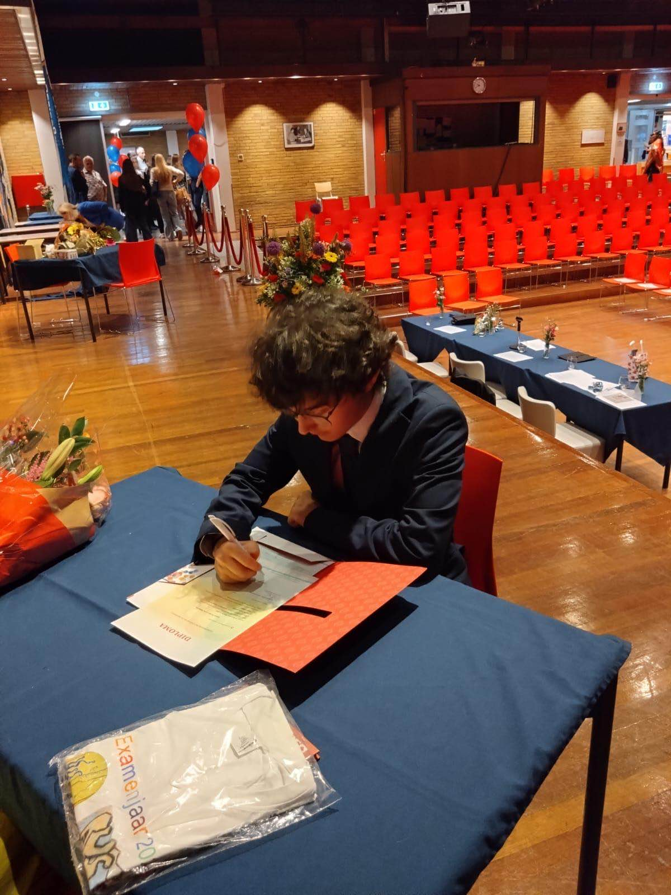

About Me!!
Hey there! I'm a web development enthusiast and an Artificial Intelligence student at Vrije Universiteit
Amsterdam. My journey into coding started back in high school after discovering it on social media and ever
since I've been hooked on solving problems, creating cool stuff and constantly learning.
I see every project as a chance to grow, always exploring new techniques, refining my skills, and pushing myself
to improve. Outside of coding, I love taking walks while listening to music. Music keeps me motivated and fuels
my creativity.
Feel free to explore my projects and read the descriptions, I'd love to hear what you think!
